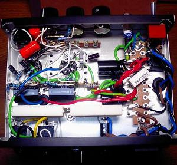

Fender Champ Amp AA764改～後編～
2010年01月28日 カテゴリー：ギターアンプ・ベースアンプ
初めての真空管ギターアンプですが、あっさりと完成してしまいました。真空管はすごく熱くなるので本来はカバーか何かをつけないといけません。
ケース内部は下写真です。

あんまりキレイとはいえません。まぁこんなもんでしょう。ラグ板はトランスを取り付ける穴を利用して取り付けました。部品レイアウトは一応手書きで書いていたんですが、ほとんどその場で考えながら組み立てました。ですのできちんとしたレイアウト図はありません。初めて単線をたくさん使いましたが、撚線より使いやすいですね。シャーシはタカチTM-180(W180×H40×D130)というアルミケースです。厚さ1mmなので強度が不安です。真空管の穴はハンドニブラ－で開けました。
動作中の各部の電圧は以下のようになりました。
[12AX7]
ピン1：151V ピン3：1.2V ピン6：156V ピン8：1.1V
[6BQ5(EL84)]
ピン3：8.1V ピン7：252V ピン9(B3+)：247V
[電源]
整流直後：286V B2+：263V B1+：232V ヒーター：5.7V(AC)
※くれぐれも感電に注意！！
やはりヒーター電圧はちょっと足りません。でもちゃんと動作してるようです。他も設計と若干ずれてるところもありますが、大体OKです（真空管ギターアンプは結構いい加減に作っても動くらしい）。出力は計算上では3.8Wといったところです。歪ませた音を出したいときはラインアウトを使います。アッテネーターが欲しいところです。
完成後に気づいたのですが、回路図の可変抵抗の向きが間違っていましたので前編の記事を修正しています。ボリュームの配線は間違いやすいのでその場で考えて配線した方がよさそうです。
電源トランスと出力トランスの磁束の向きが同じみたいなのでハムノイズが心配でしたが、全然問題ないようです（防磁ケースなのかも）。音はというと、これぞ真空管の音（ということにしておきます）。そのうち録音環境が整ったら波形も見てみたいと思います。
～前編～に戻る